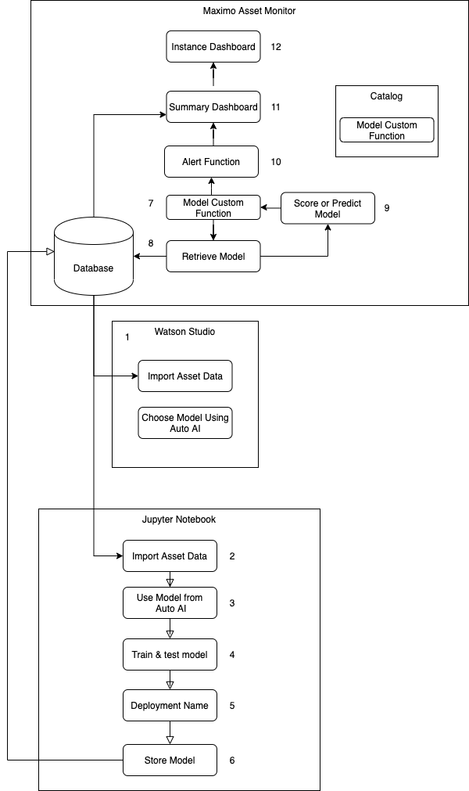

Summary
In this Maximo Auto AI Lab you wil learn how to use Auto AI to identify a prediction machine learning model that you can train and then deploy to Maximo Asset Monitor. You will learn how to:
- Use the provided Jupyter notebook that will contain Python code to train, test and deploy machine learning model to Maximo Asset Monitor
- Use the provided Maximo Asset Monitor custom function to make predictions as new time series data is received in Maximo Asset Monitor
- Create Asset Types and devices using simulated pump data.
- Create an Asset Type and Asset dashboards to see the pump data and model predictions in Monitor
Description
Maximo Asset Monitor provides a powerful analytics platform to ingest time series data from a variety of historians and devices. Monitor includes a variety of model functions that can be use to predict performance of assets or detect performance anomalies. Sometimes however you may want to create custom machine learning models to make predictions or classifications using asset data. With Auto AI the process of selecting the right model and identifying the right feature inputs to make metric prediction is greatly simplified.
The intended audience for this tutorial are developers and data scientists who would like to analyze their data in Maximo Asset Monitor using customized machine learning models that are deployed in the Maximo Asset Monitor Service schedule pipeline.
Pump Data and Devices
To apply AI and Monitor assets you will create 2 pump devices 11111096 and 111137F8. To simulate sending data to the
pumps, you can use the provided Python script pump_simulator.py to send device data to Monitor IOT Platform. This lab
uses real pump device data in the csv file named maximo-auto_ai_pump_all_data.csv. The two pump device data metric readings
that will sent are:
| Metric Name | Metric Description |
|---|---|
| evt_timestamp | Reading timestamp metric data was read by sensor |
| speed | Pump impeller speed |
| head | Pump head |
| device_id | The device identifier for the 2 pump devices 11111096 and 111137F8 |
| pump_mode | Pump mode a for automatic or h for manually operated by hand |
| flow | Pump flow |
| voltage | Pump voltage |
| POWER | Pump power consumption |
| CURRENT | Pump current |
Note
If your lab is instructor led steps 1, 2, 3, 4, 5, 6 and 9 have already been done for you in the environment provide to you by your instructor. You should only do steps 7, 8 and 10.
Exercises
Find the detailed instructions in the each exercise below:
-
Create Dashboards in Maximo Asset Monitor using simulated pump data
-
Identify Prediction Models to predict Power consumption using Watson Studio Auto AI
-
Train Test and Deploy Models in Monitor to Monitor using Juypter Notebook
-
Deploy and Configure a PredictionModel Custom Function in Monitor
-
Update Dashboards with power prediction calculated metric in Maximo Asset Monitor
Architecture
Here is the Architecture flow for this tutorial 